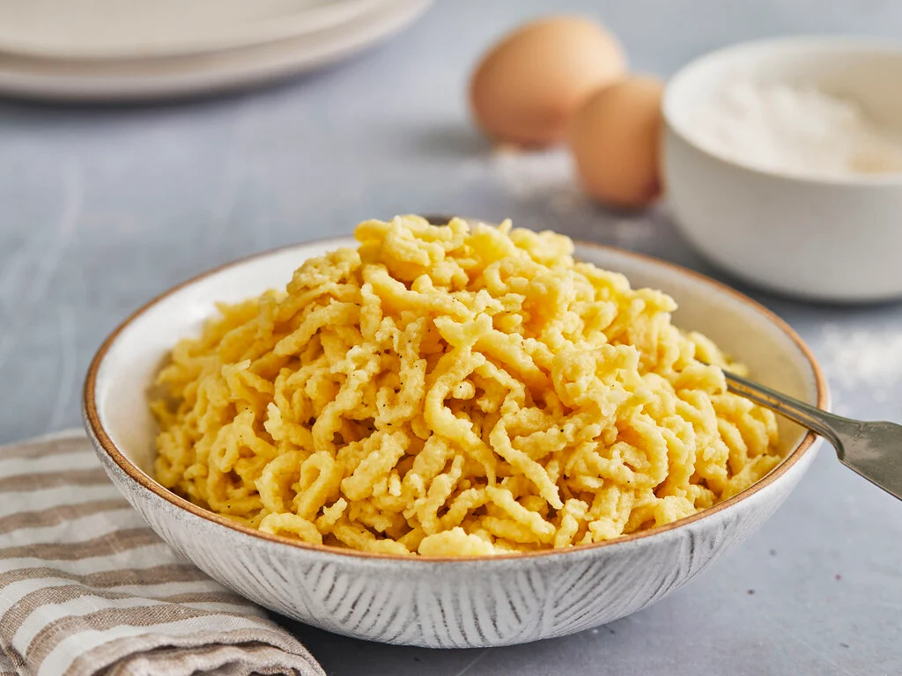

German Spätzle

A South German Dream
Spätzle are South Germany's answer to Noodles, made from just Eggs,
Flour and a pinch of Salt, they fit almost every german Dish perfectly.
They are cheap, easy to make and taste sooo good!
Ingredients
- 210g Flour
- 3 Eggs
- 1 Tbsp Water
- A pinch of Salt
- A tool called a Spätzle Press is needed
to squeeze the Dough into the water.
Steps
- Bring a Pot of water to boil, (don't forget to salt the water).
- In the meantime mix all ingredients thoroughly until they turn into a sticky dough.
- Put some of the dough into the Press (don't fill it up to much).
- When the Water is Boiling press the Dough into the Water.
- When the Water starts to foam take the spätzle out of the water with a sieve and place them in a Bowl.
- Repeat until done and enjoy your Spätzle, either just like that, or as a side dish with a delicious german meal.
Back home